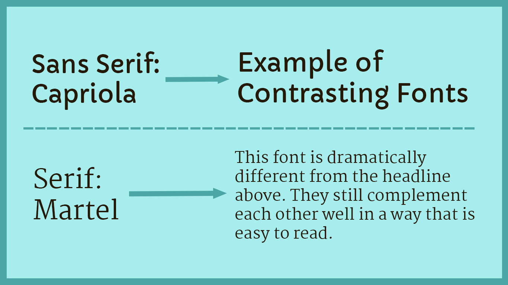
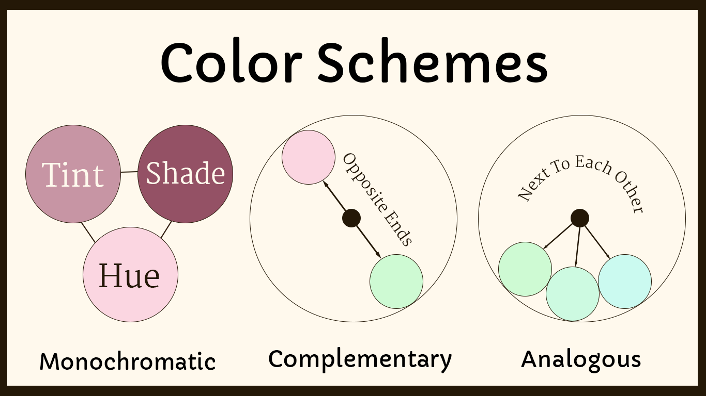
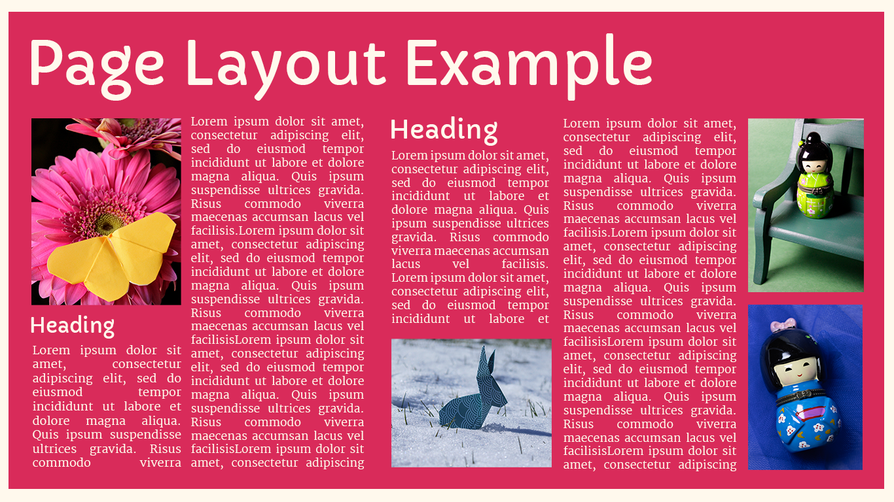

No matter what you are designing, you should have a main font. When it comes to web design, most likely this will be used in your title or headline text. It’s meant to be an accent, to stand out, and influence the mood of your design. It doesn’t really matter what type of font it is, but knowing the first one will help you choose your second.
You wouldn’t want to choose two serifs that look similar, there is no contrast and in fact, it looks like a design mistake.
Now that you have a main font for your design, the best way to choose a good secondary font is to make sure it’s dramatically different yet complements the design. You wouldn’t want to choose two serifs that look similar, there is no contrast and in fact, it looks like a design mistake. The example below emphasizes the contrasts that occurs when using a sans serif and serif together.

Just like choosing a color palette, it can be easy to get carried away with all the options available to use for your design. A good general rule is to stick to about 2–3 different typefaces total for a design. Now of course this might vary depending on what you are designing but it’s a good rule of thumb.
For example, if you’re designing a logo you’ll most likely modify one main font and maybe use a secondary typeface. For a website or an app, you’ll likely want to follow the same rule. Especially when designing for digital screens, legibility and accessibility are key to creating a good user experience.

A color scheme is a harmonious combination of colors. The three main types of color schemes designers should know about are monochromatic, complementary, and analogous. You could think of these schemes as sort of like templates for choosing colors. Let's look at each one in more detail.
Monochromatic color schemes are based on a single hue ("mono" means one). Hues are primary and secondary colors, like red, yellow, and green. To create a monochromatic color scheme, you'd pick a hue, for instance blue, and use tints, shades, and tones to create a harmonious palette. Monochromatic colors tick the box for visual appeal, but be careful to create enough contrast for legibility.
Complementary color schemes consist of colors on opposite ends of the color wheel. For example, red and green or blue and orange. Complementary colors tend to contrast well and are therefore a popular choice for web design. However, the contrast can be striking and should therefore be used intentionally in order to ensure that the colors aren't too distracting.
Complementary colors tend to contrast well and are therefore a popular choice for web design.
Analogous color schemes are made of colors that sit next to each other on the color wheel. These color schemes are inherently visually appealing, but as with monochromatic color schemes, be careful to create enough contrast for legibility. A tip for using an analogous color scheme on a website is to pair it with a neutral color like black or white in order to improve readability.
Balance within a composition can be achieved in a couple of different ways. This can include through the use of colors, lines, and shapes. Symmetrical balance is the most straightforward. It’s achieved when elements on either side of a central vertical axis are basically the same. For example, two text blocks on either side of the page would create symmetrical balance, even if the content of those blocks wasn’t identical.

Asymmetrical balance is achieved when the elements on either side of a central axis aren’t the same. For example, you might have a large image on one side balanced out by prominent text on the other. It can also be achieved when the vertical axis that divides two elements isn’t placed directly in the center of the page. In that case, the narrower element should have a “heavier” visual weight than the wider one to achieve a balanced look. Therefore, color schemes and balance can work together to create strong compositions within web design.